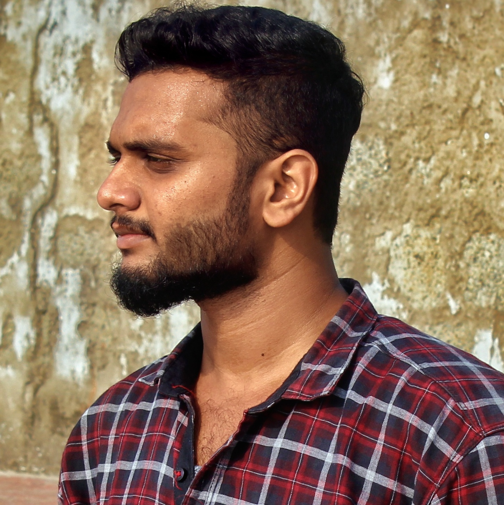

MADHAN C

Civil Engineer
60/64,Thottipalayam,Nasiyanur post,Erode-638107,Tamilnadu,India
📞+91-6380520565 | ✉madhanc0807@gmail.com | lnMadhan C
"Confident and Responsible society engineer with significant designing skills,seeking a suitable position in your organisation"
EDUCATION
B.E Civil Engineering,Aug 2015 - Apr 2019
CGPA : 7/10
Karpagam College of Engineering - Coimbatore
•Head Co-ordinator in intercollege Event - Dhruva 2018
Twelth standard,Computer Science,Jun 2014 - Mar 2015
PERCENTAGE : 82.91
Erode Hindu Kalvi Nilayam Higher Secondary School - Erode
•Contributed as School Pupil Leader
Tenth Standard,State board,Jun 2012 - Mar 2013
A.E.T Matriculation Higher Secondary School - Erode
PERCENTAGE : 91.20
•Trained in Microsoft Office Tools
SKILLS
Area of Skillsets :
Plam Designing,3d Walkthrough with Rendering,3d Elevation,Interior Designing,Construction Management
Designing Tools :
AutoCAD,Revit,MS Project,SketchUp
Editing Tools :
Adobe Photoshop-Basics
Languages :
Tamil,English
EXPERIENCE
Ramalingam Construction Company Pvt.Ltd-Chennai
SITE ENGINEER - 6 months(Apr 2019-Oct 2019)
•Plastering Work Supervision
•Piling Work Management
•Basic Site Works
RESEARCH/PROJECTS
UNDERGRADUATE MAIN PROJECT
Effect Of Silica Fume Addition On Mechanical Properties Of Concrete
•To modify the microstructure of concrete by the addition of silica fume blended cement and to enhance the mechanical properties of concrete.
UNDERGRADUATE DESIGN PROJECT
Designing and Planning Analysis Five Storey Restaurant Building
ROLE : Plan Designer
•Planning With CAD Design and load calculation has been done with Staad-Pro , Manual Calculation and Designing calculation are compared for efficiency.
CERTIFICATIONS
3D DESIGNING
SketchUp with V-Ray :
3D Modelling,Elevation and Interior designing,V-Ray rendering.

Revit Architecture :
3D Walkthrough,Elevation,Family Creation & 3d Rendering.
AutoCAD :
2D plan Designing
AREA OF INTEREST
Technical :
- Modern Infrastructure Designing
- Interior Designing
- Architectural concepts
General :
- Photography
- Editography
DECLARATION
I, Madhan C, do hereby confirm that the information given above is true to the best of my knowledge.